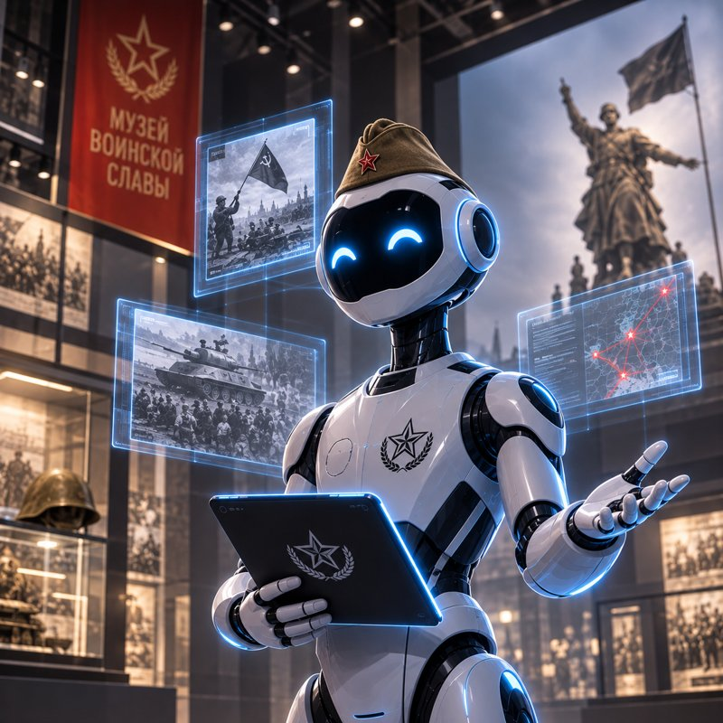

Помним · Гордимся · Сохраняем
Музей
Музей
воинской славы
История. Подвиг. Память.
Музей школы № 6 посёлка Рефтинский — ордена и медали Российской империи, СССР и современной России, рассказы о героях и память о наших земляках — участниках СВО.
музея→ Хроника
наград→ Участники
СВО→ Викторина
«Проверь себя»→
НейрогидВаш цифровой экскурсовод

Личный маршрут
Ваша экскурсия по музею
Сбросить отметки о просмотре?
Выставки музея
Все залы →Как появлялись награды
Лента прокручивается вбок.
Участники СВО из нашей школы
Участники специальной военной операции, которые учились в школе № 6 посёлка Рефтинский. Мы гордимся ими и храним память о тех, кто не вернулся.
Проверьте себя
Восемь вопросов по экспонатам всех трёх эпох. По итогам вы получите воинское звание.